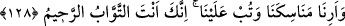

Kâbe’nin on defa inşâ olunduğu söylenir. Meleklerin inşası Hz. Âdem’in
yaratılmasından önceydi. Sonra sırasıyla, Hz. Âdem, Hz. Âdem’in oğullarının, Hz.
İbrâhîm’in, Amâlika’nın, Cürhüm’ün, Kusayy b. Kilâb’ın, Kureyş’in, Abdullah b.
Zübeyr’in ve Haccâc b. Yûsuf’un inşâaları gelir. Yalnız Haccâc’ın inşası Kâbe’nin
tamamının değil, bir duvarının inşâsıdır.
Hâfız Süheylî ise Kâbe’nin beş defa inşâ edildiğini, ilk inşasının da Şît (a.s.)
zamanında olduğunu söyler. Nebevî haberde vârid olduğu üzere âlemde on beş beyt
vardır. Bunlardan yedi tanesi semânın arşa kadar olan bölgesinde, yedi tanesi de arza
doğru olan bölgesindedir. Kâbe, bu beytlerin beşincisidir. Bunlardan, Arşa yakın olanı,
Beyt-i Ma’mûr’dur. [14] Her beytin Kâbe’nin haremi gibi harem kısmı vardır. Bu
beytlerden biri düşecek olsa, yedinci kat arza kadar olan her beyt birbiri üzerine düşer.
Kâbe’yi imar edenler olduğu gibi, arz ve semâvat ehlinden zikrettiğimiz bu beytleri imar
edenler vardır. Bunu Muhaddis Kazerûnî, el-Menâsik adlı eserinde zikretmiştir.
Yeryüzüne konulan ilk dağ, “Ebû Kubeys” dağıdır. Bu sebeble Mekke, “Ümmü’l-
Kurâ” (şehirlerin anası) diye isimlendirilmiştir.
Kâ’b ise şöyle der: “Hz. İbrâhîm Kâbe’yi eski temelleri -meleklerin su üzerine inşâ
ettikleri temeller- üzerine bina ettiği gibi, Hz. Süleyman da Beyt-i Makdis’i eski
temelleri üzerine bina etmiştir.”
“Ey Rabbımız, bizden kabûl buyur.” Hz. İbrâhîm ve İsmâîl böyle diyerek Beyt’in
temellerini yükseltiyorlardı. Rabbimiz duâmızı itâat ve sana yaklaşma kabilinden bütün
amellerimizi özellikle de bu binânın inşâsını, bizden kabûl buyur.” diye duâ ediyorlardı.
“Muhakkak ki sen,” işitilebilecek her şeyi “hakkıyla işiten” ve bilinebilecek her
şeyi “kemâliyle bilensin.” Dolayısıyla duâlarımızı işitir, amellerimizdeki niyetlerimizi
de bilirsin. Bu sözler, Hz. İbrâhîm ve İsmâîl’in emrolundukları şeyi yerine getirmede
herhangi bir şekilde kusur işlemediklerine, daha öte var güçleriyle çalıştıklarına delâlet
eder. Aksi takdirde, eksik iş yapan ve gevşek davranan bir kimse sorumlu olduğu
makama karşı, tatlı dil ve yumuşak kalblilikle: “Şüphesiz sen hakkıyla işiten ve
bilensin” demeye nasıl cesâret edebilir?
Âyet aynı zamanda şuna delâlet eder: Allah’a ibâdet ve tâatla emrolunan bir kimse,
ibâdetini emrolunduğu gibi yapmalı ve bu uğurda bütün gayretini sarfetmelidir. İbâdetini
bitirince de yaptıklarını kabûl etmesi ve emeklerini boşa çıkarmaması için Allah’a
tazarrû etmeli ve yalvarmalıdır. “Yapılan her ibâdet kabûl olur.” gibi ileri geri sözler de
etmemelidir. Çünkü, şâyet böyle olsaydı Hz. İbrâhîm ve Hz. İsmâîl, yaptıklarını kabûl
etmesi için Allah’a böyle duâ etmezlerdi. Kabul etmek de reddetmek de Allah Teâlâ’nın
işidir. Hiçbir şeyi yapmak O’na vacib değildir.